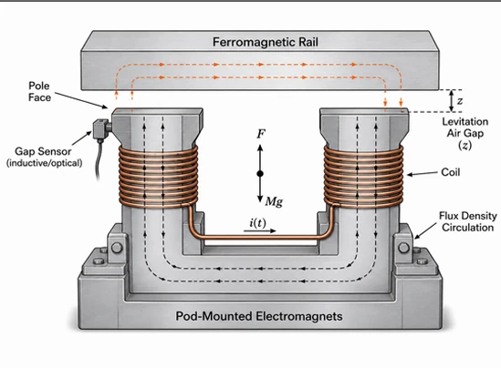
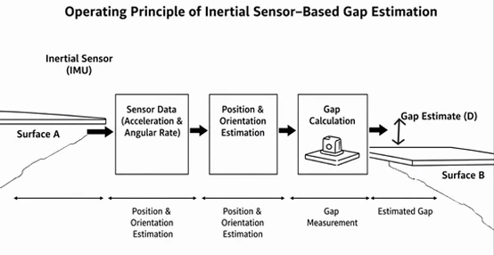
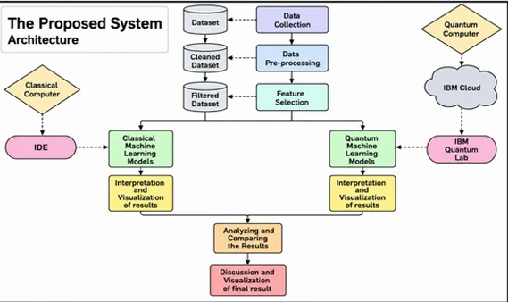
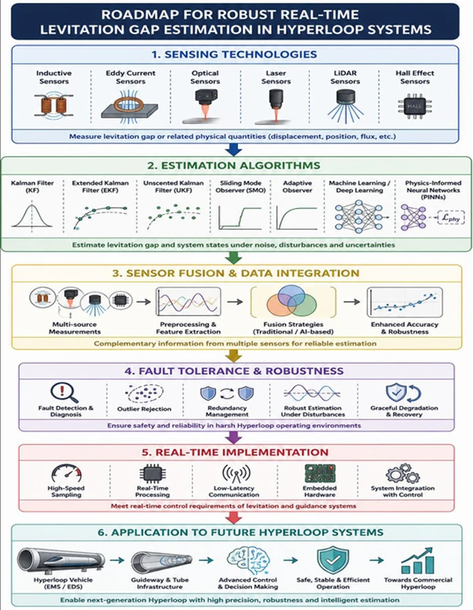

Robust real-time levitation gap estimation for hyperloop pods
A first-author review, with V. Dabass: five ways to sense the gap between a maglev pod and its rail, and the estimators that keep the reading honest under heat and interference.
- Authors
- P. S. Sesodia, V. Dabass
- Journal
- Next Research (Elsevier), 2026
- Type
- Review article
- Covers
- Inductive, optical, capacitive, Hall-effect and UWB-radar sensing; EKF, UKF and sliding-mode observers; EMS and EDS suspension
- Read it
- doi:10.1016/j.nexres.2026.102384
This page is a piano roll. Its keys run down the left edge: click one, or click the paper to punch a note. Scrolling plays it.

What it covers
A maglev pod has to know, continuously, how far it is from the track. The review compares the ways to sense that gap (inductive, optical, capacitive, Hall-effect and UWB radar) and then the ways to estimate it: extended and unscented Kalman filters, and sliding-mode observers, for both electromagnetic (EMS) and electrodynamic (EDS) suspension. It pays particular attention to the two things that quietly ruin a measurement: thermal drift and electromagnetic interference.
Why the gap has to be estimated, quickly
An electromagnet pulling up on a steel rail, with current i and gap z, pulls with a force that goes roughly as
F = k (i / z)²
At equilibrium that force holds up the pod’s weight. But nudge the gap and the force moves the wrong way: if the pod drops and the gap grows, the pull weakens and it drops further; if it rises, the pull grows and it snaps to the rail. Electromagnetic suspension is unstable on its own. The controller has to change the current faster than the gap drifts, and it can only act on the gap it measures. Hence a whole review about measuring z.



Cite
Sesodia, P. S., & Dabass, V. (2026). Robust real-time levitation gap estimation for hyperloop pods. Next Research. doi:10.1016/j.nexres.2026.102384
@article{sesodia2026levitation,
author = {Sesodia, Pranjal Singh and Dabass, V.},
title = {Robust Real-Time Levitation Gap Estimation for Hyperloop Pods},
journal = {Next Research},
year = {2026},
doi = {10.1016/j.nexres.2026.102384}
}
What it taught me
How to read a field systematically, and that a controller is only as good as its estimate of the state.